{kind=link}
{kind=link}
{kind=link}
2019-01-10: Serenity booting into a GUI for the first time:

The Serenity operating system turns 1 year old today. I'm counting from the first commit in the git repository, on October 10, 2018. Parts of the code had been around for a while before that, so this first commit was really about putting everything I was tinkering with into a shared repo.
Anyways... we have to start somewhere!
NOTE: This web page is very light on HTML/CSS features so that it can be rendered by Serenity's own Browser!
In the beginning there were four components:
These were just some little C++ projects I had been tinkering with after installing Slackware 11 on an old PC to do some hacking. None of them were very mature, but it was fun, and I was in a place where I needed to do some programming to find myself again.
Here's how the ext2 filesystem parser looked like when running:
::>cd /home/andreas
::>ls -l
[VFS] ls ///home/andreas -> ext2fs 01:00000017
01:00000017 drwxr-xr-x 1024 2018-10-08 13:47:04 ./
01:00000016 drwxr-xr-x 1024 2018-10-02 23:43:49 ../
01:00000018 -rw-r--r-- 18 2018-10-02 23:44:09 file1
01:00000019 -rw-r--r-- 18 2018-10-02 23:44:14 file2
::>
2018-10-10: The first ever "screenshot" of what became Serenity:
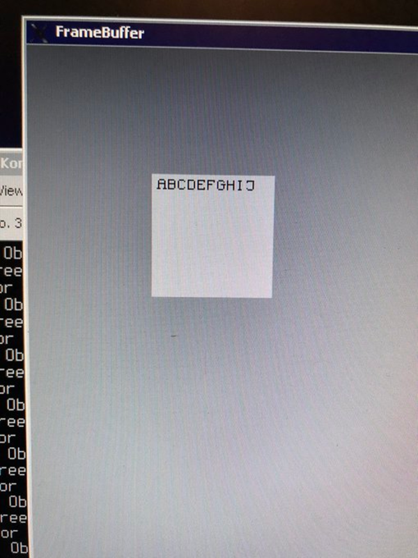I imported a little x86 kernel I had been working on earlier in the year. It was a piece of crap, but it was a place to start. I originally had some weird idea that kernels should be written in C, so I had tried to write in C, but I thankfully realized very quickly that I was being silly. :^)
2018-11-08: Serenity running inside a virtual machine:
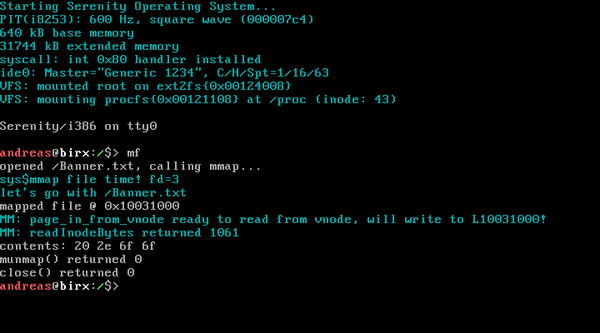I kept working on the GUI toolkit on my Linux system, while also developing the standalone system. This is how far I got with the GUI while it was still sitting on top of SDL on Linux:
2019-01-09: The "Widgets" test program in an SDL framebuffer:
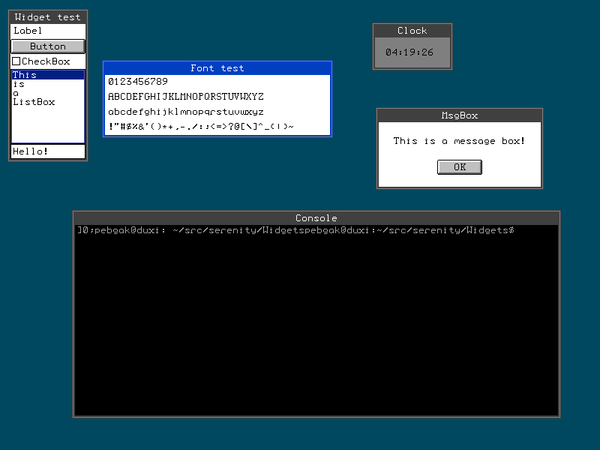I then decided it was time to get this running on top of Serenity's own kernel. A day later, I saw this running in a VM for the first time. It was the most beautiful thing I had ever seen.
2019-01-10: Serenity booting into a GUI for the first time:
I started working on a userspace API for doing GUI stuff. The original version was a monstrosity with the window server running in the kernel and processes making syscalls to create windows, etc.
2019-01-21: Seeing how many "guitest" processes I can spawn:
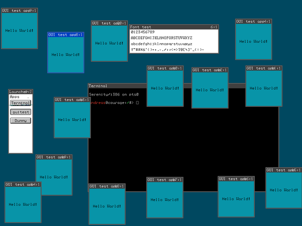2019-02-03: Added FontEditor and Clock, ported GNU bc:
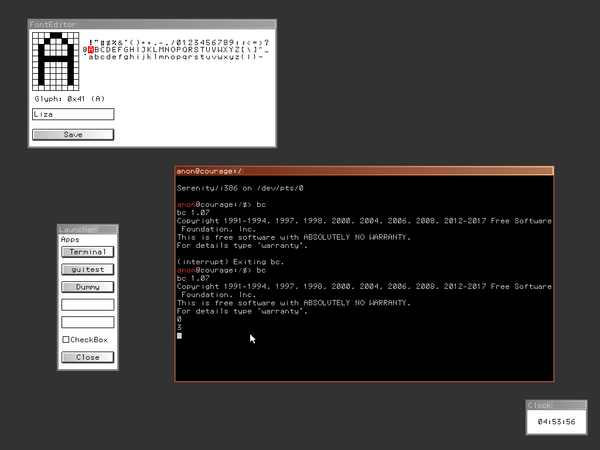2019-02-08: Wallpaper support, a "top" program, and more:
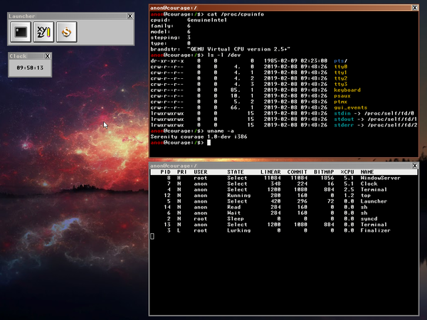2019-02-11: First implementation of menus! And a very early FileManager:
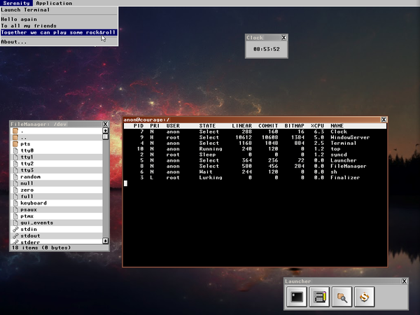2019-02-28: Early version of ProcessManager (today called SystemMonitor):
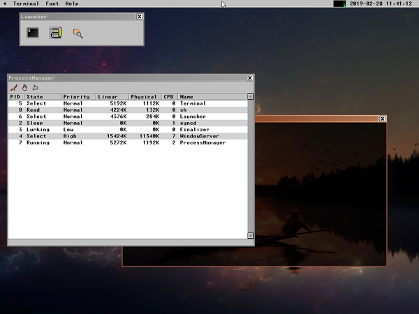Somewhere around here I figured it would be cool to add networking support, so I started building a network stack.
2019-03-12: My host machine is pinging me!
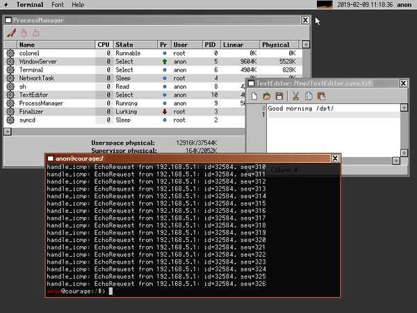2019-03-15: The first thing I did when TCP kinda worked was build an IRC client:
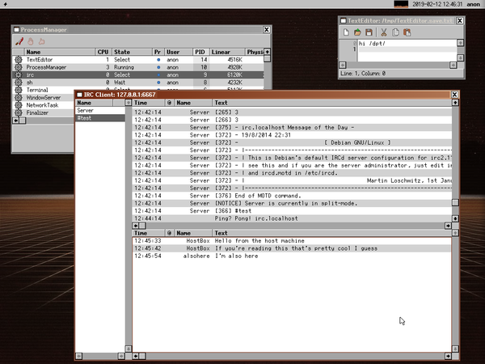2019-03-29: Using FileManager to drive development of tree and icon views:
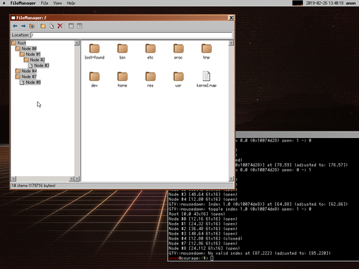2019-04-11: First screenshot of VisualBuilder, a Visual Basic inspired GUI design tool:
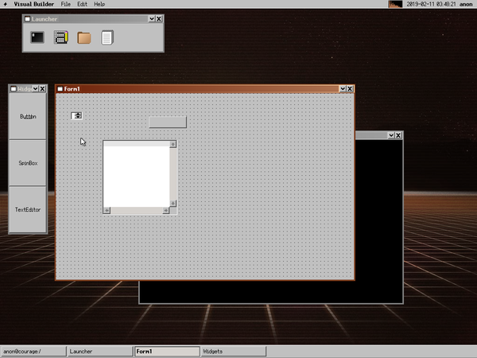2019-04-20: I made a Snake game. You gotta have snake!
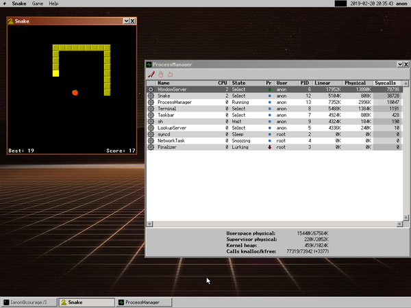2019-04-22: First semi-successful GCC port. It can only compile small C programs:
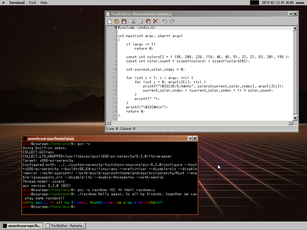2019-06-14: Started building PaintBrush, a simple painting application:
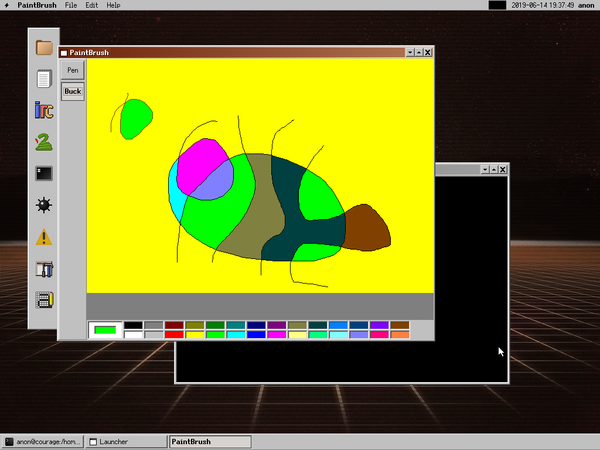2019-07-14: After the system got basic sound support, I built Piano, a desktop synthesizer:
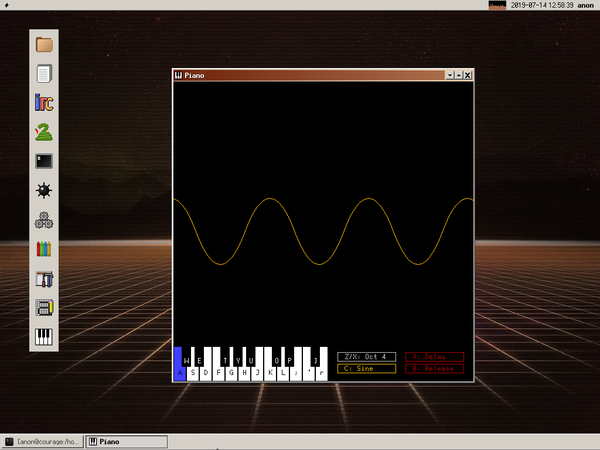2019-08-27: New menu look inspired by Microsoft circa 2002:
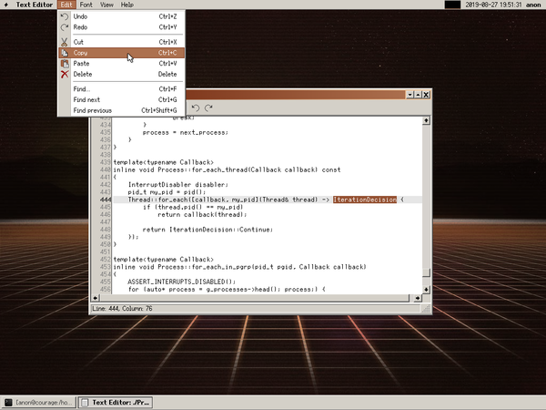2019-09-09: Ladies and gentlemen, we've got DOOM:
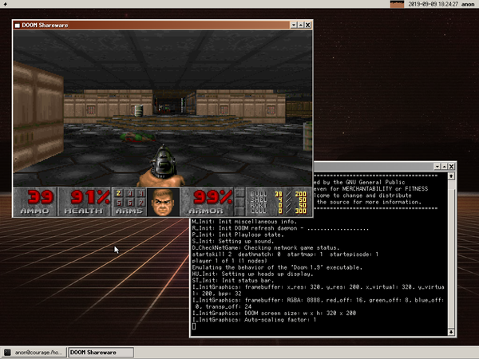2019-09-29: Working on basic CSS support in LibHTML:
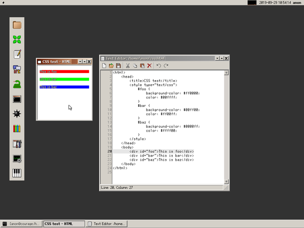2019-10-10 Viewing this webpage in Serenity's Browser!
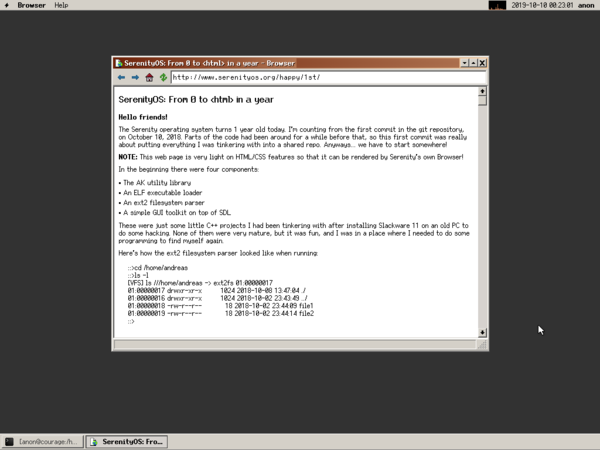And with that, this little screenshot tour of the first year of Serenity is over.
If you would like to see more, I've also been making regular monthly update videos throughout the year:
To all the boys and girls who have helped out in the last year, with code, bug reports, docs, commenting on videos, e-mailing, hanging out on IRC, retweeting, telling your friends, etc, thank you! I'm so grateful for all the love this project has been getting.
And also, a huge thank you! to everyone who has supported me via Patreon and other donation methods! It's my dream to turn this into a full time show some day, and you're a huge part of keeping that dream alive. :)
Let's see what we can do in year 2!
Andreas Kling, 2019-10-10
{kind=link}
{kind=link}
{kind=link}
{kind=link}
{kind=link}
{kind=link}
{kind=link}
{kind=link}
{kind=link}
{kind=link}
{kind=link}
{kind=link}
{kind=link}
{kind=link}
{kind=link}
{kind=link}
{kind=link}